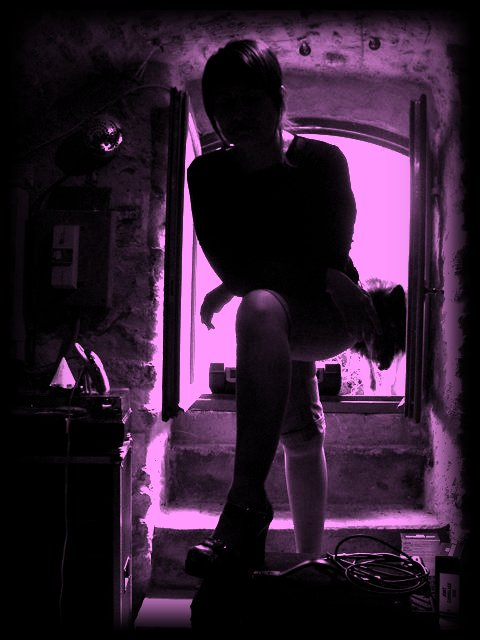

Un nouveau site permettant aux musiciens et groupes amateurs de faire la promotion de leur musique vient d’√™tre cr√©√© !
Sur chaque page consacr√©e √† l’artiste vous trouverez une description, un lien vers le site web et un extrait musical !
N’h√©sitez pas √† le visiter et √† vous inscrire si vous avez un groupe. La promo qui co√ªte pas une thune, c’est pas tous les jours. Merci √† eux !
http://www.annuairevocal.com/rtnp/
Catégories : Nouvelles | Commentaire (0)
- 
Voil√† pour ceux qui ne sont pas partis en vacances un petit morceau tout frais, bien juteux, parfait pour l’ap√©ro : M√©chante en version 4.4 am√©lior√©e. Le Revox est revenu de l’atelier et, OMFG ca fait du bien !!!
Ecoutez ou télécharger ICI
Sinon, pour info, on a 2 nouveaux gros titres en pr√©paration, tr√®s teint√©s punk. √áa envoi lourd. D√®s que √ßa sort du four on vous les sert.¬† √áa porte √† 7 le nombre de titres pour Pleine Gueule, on l√¢chera pas avant d’avoir 10 titres. Pour rappel, Crevette Zombie nous a gratifi√© d’une info en avant premi√®re : la Zombie Walk de cette ann√©e se tiendra √† Paris le 9 octobre. Venez nombreux, morts, vivants ou morts-vivants !
Catégories : Nouvelles, Pleine Gueule 2010, Son | Commentaire (0)
Une nouvelle version de Pleine Lune avec m√©lodie am√©lior√©e. Celle l√† a √©t√© enti√®rement prise au studio Les Caves. Toujours pas de mastering, notre bien aim√© Revox est toujours au garage pour r√©glage. Le mixage a √©t√© fait par Tuxa et il n’y a pas encore de piste voix, mais √ßa ne saurait tarder.
Télécharger ICI.
Ca faisait longtemps qu’on avait pas sorti de morceaux. On esp√®re qu’en √©coutant celui l√† vous comprendrez pourquoi. La m√©thode de travail a chang√©. On a pass√© beaucoup de temps √† s’organiser pour rendre le studio Les Caves op√©rationnel. On exploite beaucoup mieux notre mat√©riel, notamment gr√¢ce √† une paire d’enceinte de monitoring, qui nous permet d’entendre les erreur de mixage et de r√©glage de p√©dales bien plus t√¥t. Cette version a √©t√© faite en relativement peu de temps, 2 prises basses, 2 prises guitare, rajout d’une m√©lodie synth√© qu’on avait en stock, et un mixage pour polir le tout. Chrono : 5 jours entre prises et sortie.
Voilà pourquoi on bossait en sous-marin : pour être plus efficace. On espère que le résultat vous plait.
Catégories : Nouvelles, Promotion Canap√© 2009, Son | Commentaires (1)
Ca fait un moment qu’on a pas post√© de billets sur notre site. Elles sont loins les bonnes r√©solutions de l’ann√©e ! Mais pas tant que √ßa. Donc un petit billet en passant pour donner des news. L’aventure de l’autoprod se poursuit et ca demande beaucoup de boulot. Le Studio Les Caves nous permet maintenant de faire nos enregistrement, mixage et bient√¥t mastering. Le Revox est chez le chirurgien, on l’attend pour pouvoir finaliser le remixage de notre album Promotion Canap√© 2009.
Tuxa monte en compétence mixage et commence à nous faire des sons qui tuent. Et pour boucler la boucle, je prépare une plateforme de diffusion de musique libre. Gros projet à long terme, quand ca aura avancer, je vous en reparlerait.
Le cadeau du jour, Cool Ghoul des 3D Invisibles :
Catégories : Nouvelles | Commentaire (0)
Depuis la sortie de l’album Promotion Camap√© 2009, il s’est pass√© un petit bout de temps… Bon ok, quasiment une ann√©e. Pendant ce temps, au studio Les Caves, on a continu√© √† bosser, on a enrichi les morceaux. Samedi dernier on s’est d√©cid√© √† r√©-enregistrer un des morceaux de l’album : Bizness Loto.
Donc pour votre plus grand plaisir, mesdames et messieurs, sous vos yeux ébahis, voici  : Bizness Loto Version 2.
Changements par rapport √† l’ancienne version :
- Nouvelle ligne de basse
- Nouvelles cordes vocales de Mag
- Prise de son au Marshall et SM-57 pour la guitare
- Prise de son au Fender Bass et SM-57 pour la basse
- Suppression des pédales Sans-Amp pour la guitare et la basse. Il faudra refaire les réglages avec les enceintes de monitoring pour pouvoir les réintégrer
Et une mention spéciale à Tim Laser, qui a préparé la nouvelle basse de Mo. Franchement elle tue sa mère. Elle aura droit à un petit reportage photo bientôt.
Catégories : Nouvelles, Pleine Gueule 2010 | Commentaire (0)
 Pour ceux qui ne connaissent pas encore le concept, la Zombie Walk c’est une foule de passionn√©s de films d’horreur et sp√©cialement de (oh surprise !) zombies qui se d√©guisent et d√©ambulent dans les rues. Rien n’est d√©fini ancore pour 2010 mais la page d’inscription est d√©j√† disponible.
Pour ceux qui ne connaissent pas encore le concept, la Zombie Walk c’est une foule de passionn√©s de films d’horreur et sp√©cialement de (oh surprise !) zombies qui se d√©guisent et d√©ambulent dans les rues. Rien n’est d√©fini ancore pour 2010 mais la page d’inscription est d√©j√† disponible.
Alors zombie de tous poils : inscrivez-vous !
Si vous n’avez pas de costume, il est possible de payer quelques euros pour se faire maquiller sur place. Donc plus d’excuses !
Pour vous donner une id√©e de l’ambiance, allez faire un tour sur le groupe Flickr d√©di√©.
Catégories : Nouvelles | Commentaires (2)
A la dernière répétition, nous avons refait des prises voix pour le dernier morceaux en incubation : Méchante. Tuxa nous a fait un mix pas mal du tout et ca y est on envoie la gomme : la 4e version de Méchante.
Les plus attentifs auront not√© qu’on a publi√© les paroles qui vont avec. Pour les retardataires, voir l’article ICI.
Comme d’habitude, on a publi√© en parall√®le sur Dogmazic pour votre plus grand bonheur.
Catégories : Nouvelles, Pleine Gueule 2010, Son | Commentaire (0)
Comme vous avez d√ª vous en apercevoir, le site a chang√© de visage. Les plus anciens auront remarqu√© qu’il s’agit de la 2√®me refonte. Promis, cette fois on change plus le moteur. Apr√®s avoir test√© Spip et Joomla, nous avons enfin trouv√© notre bonheur avec WordPress.
Vous n’√™tes pas √† l’abri de tentatives pour rendre le site plus joli mais au moins on ne bougera plus les liens.
Dans la foul√©e, passez aussi voir le site de Tim Laser, qu’on a aid√© √† monter. Le th√®me est spartiate mais il y a d√©j√† vid√©os et musique accessibles.
Et comme c’est vachement plus facile, je le fais, j’inclus une vid√©o dans cet article ! Chuis un ouf moi, j’ai peur de rien !
Pour rappel, ça a été tourné lors de la fête de la musique 2009.
Catégories : Nouvelles | Commentaire (0)
Vous le saviez propablement , mais en fait Zombie Now est le premier morceau de RTNP, c’est par ce morceau que l’on sent le mieux l’esprit du groupe.
C’est quand m√™me la 3eme version, et elle n’est toujours pas d√©finitive. Pour la petite histoire, ce morceau a √©t√© oubli√© lors de notre enregistrement au studio « La villa des Fleurs » √† Mantes la Jolie. L’√©norme boulette… Mais peut √™tre que √ßa nous aura laiss√© le temps de le m√ªrir encore.
Initialement Mag jouait la m√©lodie au piano, mais au fur et √† mesure que le temps a pass√©, ce morceau a beaucoup chang√© et donc la melodie original n’allait plus.
C’est donc une m√©lodie faite par Mimi (aux belles jambes) et Tuxa qui a pris le relais dans cette version.
Lire la suite »
Catégories : Nouvelles, Pleine Gueule 2010, Son | Commentaire (0)
Voici tout chaud en direct de l’enfer, une maquette acoustique de « Damn√© », c’est un texte de Mo et Tuxa qui on vraiment mis super longtemps √† le peaufiner.
Du bon blasph√®me pur et dur √† l’endroit puis √† l’envers, on y retrouve tout un monde d’anges, de d√©mons, d’enfer et de motard. C’est l’histoire d’un rocker pour qui m√™me l’enfer est pas digne de lui.
Niveau musical:
Dans un premier temps ¬†la difficult√© a √©t√© de condenser les 3 pages de sc√©nario √©crit par Tuxa, tout en gardant le sens de l’histoire, une seconde passe a √©t√© faite pour caser dans presque toutes les phrases un mot ou une expression en rapports avec le sacr√© et l’enfer.
Lire la suite »
Catégories : Nouvelles, Pleine Gueule 2010, Son | Commentaire (0)


{kind=link}